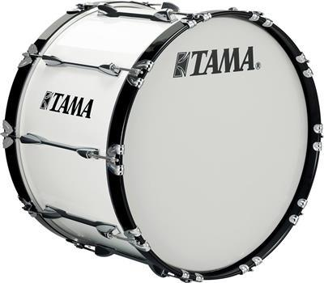

BOMBOS
El bombo es un instrumento de percusión de dos membranas que se percute con taco (o boliche) y con la mano. El cuerpo del instrumento es de madera de balso, cedro o chimbuza. Por el lado que se golpea se templa un cuero de venado, por el otro el cuero de tatabro.
Es un instrumento musical de percusión membranófono, de timbre muy grave, aunque de tono indeterminado. Debido a su sonido grave, se usa habitualmente para marcar y mantener el pulso en diversos estilos de música.
